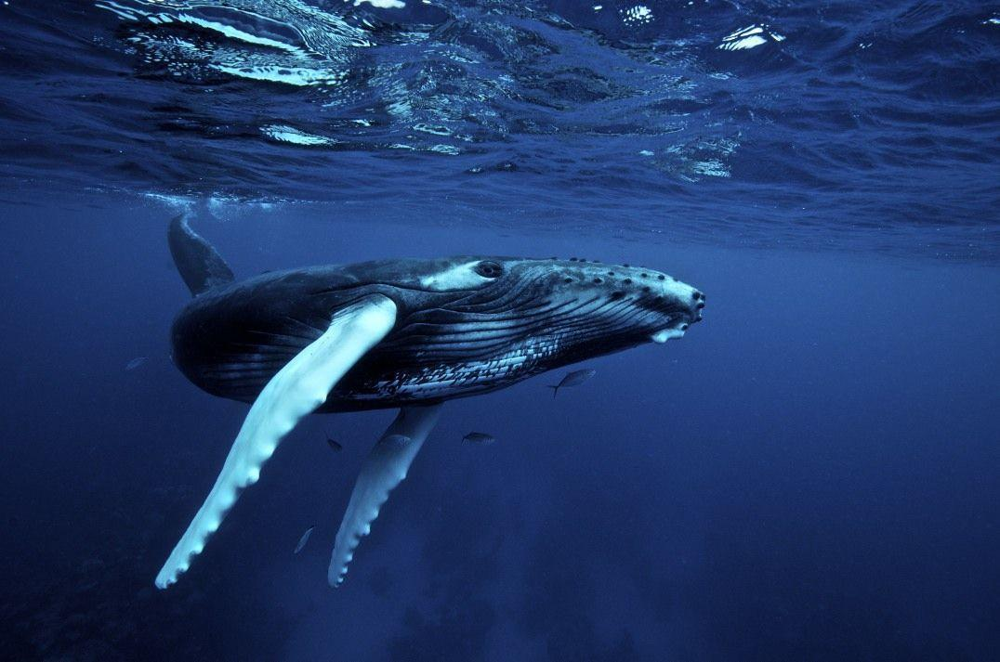
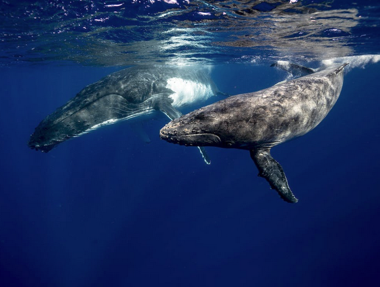

Whales: Majestic Marine Mammals ! | |||
|
Whales are large marine mammals belonging to the order Cetacea, which also includes dolphins and porpoises. They are known for their immense size, incredible adaptations to life in the water, and their importance in marine ecosystems. |
|||
|
 Feeding Habits: Baleen Whales: Baleen whales use their baleen plates to filter food from the water. They often engage in a behavior called "lunge feeding", where they open their mouths wide and engulf large amounts of water and prey (such as krill or small fish) in a single gulp. The water is then forced out through the baleen plates, trapping the prey inside for consumption. Toothed Whales: Toothed whales, like dolphins and sperm whales, have sharp teeth that they use to catch and consume prey. They use echolocation to locate prey in the water, emitting sounds that bounce off objects and return as echoes, helping them to identify the location, size, and shape of potential food items. Communication: Whales are known for their complex vocalizations, often referred to as "songs" or "calls". These vocalizations are used for communication, navigation, finding mates, and possibly even hunting. Humpback whales, in particular, are famous for their intricate songs that can last for hours and can be heard over long distances.  Size and Weight: The blue whale, the largest animal on Earth, can grow up to 100 feet (30 meters) in length and weigh as much as 200 tons, which is equivalent to the weight of about 33 elephants. The heart of a blue whale can be as large as a small car and weigh around 1,300 pounds (600 kilograms). A human could fit inside some of the larger chambers of the heart. Unique Coloration: The skin of a humpback whale is covered in barnacles, which give them a distinctive mottled appearance. These barnacles can create unique patterns that can help researchers identify individual whales. |
|||